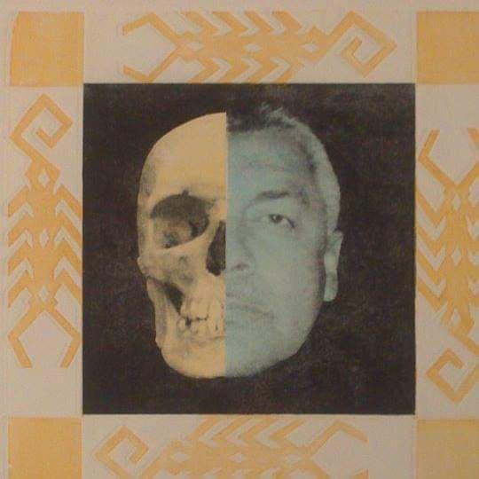

Juan Carlos Ponce López
Pintor y grabador nacido en la ciudad de Tepic, Nayarit, México, el 5 de noviembre de 1961. Comenzó a pintar a muy temprana edad, y fue descubriendo y estudiando diversos estilos y tendencias en la pintura, tomó su primer curso de grabado en 1998 en el Taller de Gráfica “El Peyote Azúl”, y desde entonces a la fecha ha participado en diversas exposiciones nacionales (3 veces festival internacional cervantino, Guanajuato; Torreón Coahuila; Salamanca Guanajuato; Zacatecas; Morelia Michoacán; León Gto; Pachuca Hidalgo; Jalisco) e internacionales (Mogi Mirim, Brasil; Uruguay; Perú; Estados Unidos; Barcelona, Huesca, España y Roma, Italia) así como tutorías nacionales, algunos de sus trabajos han sido premiados y seleccionados. Por tercera ocasión obtuvo la presea “Santiago Rosas” dentro del Festival Cultural Amado Nervo, así como becario del Fondo Estatal para la Cultura y las Artes de Nayarit. Actualmente maestro de pintura y grabado en las diversas técnicas y Coordinador de Artes Plásticas y Gráficas del Foro Cultural Ofelia Domínguez, además fue Coordinador De la Exposición Nacional e Internacional de Miniprint donde participaron once países; con sede en este Foro.